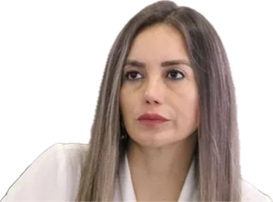
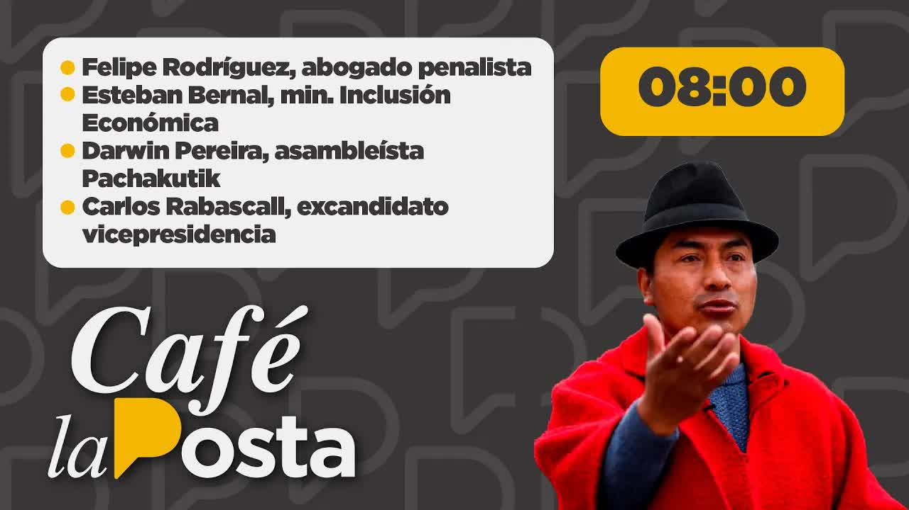

Judicial Branch of EcuadorProvincial Court of Justice of Pichincha · Office of the President
Folio 1
La Posta · June 15, 2022 · Influence peddling over the judges
Orders from the Judiciary Council
An eyewitness gave La Posta a recording of a meeting in the office of the president of the Provincial Court of Pichincha. Inside were two members of the Judiciary Council, Juan José Morillo and Maribel Barreno, and the judge who was to rule on the appeal of Guadalupe Llori, the recently ousted president of the National Assembly. Morillo tells the judge that the president of the Republic called him personally to ask for support in that case. La Posta published it on June 15, 2022, in the middle of the national strike. Carondelet denied the call. Fifteen months later the Attorney General's Office filed charges for influence peddling, and a judge ordered pretrial detention for Barreno.
Outlet La Posta · Boscán & La MoniPublished June 15, 2022
Certification
I hereby certify that the complete, unedited audio remains available to the Attorney General's Office, the Oversight Committee and the president of the Republic.
Signed: Andersson Boscán · La Posta
CertificationJun 15, 2022
Jun 1, 2022the meeting in the judge's office
Jun 15, 2022La Posta publishes the audio
2 council memberscharged as co-perpetrators of influence peddling
Sep 28, 2023pretrial detention ordered for Maribel Barreno
In four sentences
On June 15, 2022, on the fourth day of the national strike, La Posta published a recording made by an eyewitness in the office of the president of the Provincial Court of Pichincha, the highest-ranking judge in the province.
At the meeting were two of the five members of the Judiciary Council, the body that appoints, disciplines and removes judges: Juan José Morillo and Ruth Maribel Barreno. The judge's panel had before it the case of Guadalupe Llori, removed as president of the Assembly on May 31, and a favorable ruling could restore her to the post.
Morillo tells the judge that the president of the Republic called him personally and asked him to support that case, and passes on a formal request for the judge to review it and rule. Barreno was present for the entire conversation. Carondelet responded that the president did not call anyone and that Morillo used his name.
The audio led to complaints at the Attorney General's Office, summonses to appear before the National Assembly and an impeachment trial. On September 28, 2023, a judge brought charges of influence peddling against the two council members and the judge, and ordered pretrial detention for Barreno. Lasso was left out of the case.
Chapter 1
The meeting in the office
On May 31, 2022, the National Assembly removed Guadalupe Llori as president of the legislature. Llori had held on for weeks thanks to precautionary measures and protective actions that arrived, according to lawmakers, with suspicious speed: one of them two minutes after the plenary session was convened. Her appeal went to a panel of the Provincial Court of Pichincha that included the president of that court, the highest-ranking judge in the province. If that panel ruled in her favor, Llori could return to the presidency of the Assembly. The only bloc that had defended her to the end was that of Guillermo Lasso's government.

Maribel Barreno, member of the Judiciary Council · File photo
The next day, Wednesday, June 1, two members of the Judiciary Council walked into that judge's office: Juan José Morillo, the member appointed on behalf of the Ombudsman's Office, and Ruth Maribel Barreno, the member appointed on behalf of the Attorney General's Office. The Council has five members and is the body that governs the judicial career: it appoints, disciplines and removes judges. Someone else was in the room and recorded it. That person, who identified themselves to Andersson Boscán as an eyewitness to a possible crime of influence peddling, gave the full audio to La Posta.

Jun 15, 2022 · The publication of the audio
Café La Posta: Leonidas Iza released and the audio of interference in the justice system
The recording begins with a lesson in politics. The council members explain to the judge that Llori's fall worries the new president of the Assembly, Virgilio Saquicela, and that the changes could complicate things for everyone. An impeachment trial against the Judiciary Council itself, Morillo and Barreno included, was parked in the Assembly. They ask the judge whether he has already reviewed Llori's case. The judge replies that he has not yet. The source who provided the audio assured La Posta that the decision had already been written.
The president of the Republic personally called me yesterday and asked me that, if it's possible to support, that he be supported in relation to this matter, because he sees that this situation is not going to go on a good path, it's not going to go along a line of law.
Juan José Morillo, member of the Judiciary Council, in the audio published by La Posta on June 15, 2022
Morillo continues: the legislature, he says, is seizing power arbitrarily and used a session called long ago to take up the removal. So I want to pass on to you this concern of the president, with all the trust I have in you, he tells the judge. There is a formal request. I would like you to review the matter, analyze how the situation stands and be able to rule. Barreno does not speak during that part, but she is present from the greeting to the goodbye. The council members thank the judge for receiving them in his office.
The recording, folio by folio
Record of what was said in the office
Judicial Branch of EcuadorProvincial Court of Justice of Pichincha · Office of the President
Folio 2
Place
Office of the president of the Provincial Court of Pichincha, the highest-ranking judge in the province
Date
Wednesday, June 1, 2022, one day after Guadalupe Llori's removal
Time
Not stated in the recording
Case
Guadalupe Llori's appeal against her removal as president of the National Assembly
Present
Juan José Morillo and Ruth Maribel Barreno, members of the Judiciary Council, and the president of the Provincial Court of Pichincha
Recorded by
An eyewitness who recorded the meeting and gave the full audio to La Posta
Journalistic reconstruction of the recording published on June 15, 2022
Fol.2
Council members Morillo and BarrenoOpeningSummary
They explain to the judge that the fall of Guadalupe Llori worries the new president of the Assembly, Virgilio Saquicela, and that the changes could complicate things for everyone. An impeachment trial against the Judiciary Council itself, Morillo and Barreno included, is parked in the Assembly.
Fol.2v
The council membersOn the caseSummary
They ask the judge whether he has already reviewed Llori's case.
Fol.2v
The president of the Provincial CourtAnswerSummary
He replies that he has not yet.
The source who provided the audio assured La Posta that the decision had already been written.
Fol.3
Juan José MorilloThe callVerbatim
The president of the Republic personally called me yesterday and asked me that, if it's possible to support, that he be supported in relation to this matter, because he sees that this situation is not going to go on a good path, it's not going to go along a line of law.
Fol.3v
Juan José MorilloThe requestSummary
The legislature, he says, is seizing power arbitrarily and used a session called long ago to take up the removal. So I want to pass on to you this concern of the president, with all the trust I have in you, he tells the judge. There is a formal request. I would like you to review the matter, analyze how the situation stands and be able to rule.
Fol.4
Maribel BarrenoThroughout the meetingSummary
She does not speak during that part, but she is present from the greeting to the goodbye.
Fol.4v
The council membersFarewellSummary
They thank the judge for receiving them in his office.
Certification
I hereby certify that the recording was given in full to La Posta by a person who identified themselves to Andersson Boscán as an eyewitness to a possible crime of influence peddling, and that the same audio later entered the prosecutor's case file through the cooperation of a protected witness: the same person.
Signed: La Posta · June 15, 2022
CertificationJun 15, 2022
5members make up the Judiciary Council; two were in the office
Jun 1, 2022date of the meeting, one day after Llori's removal, according to assembly member Esteban Torres's reading
Chapter 2
The president called me
La Posta published the audio on the morning of June 15, 2022, with Leonidas Iza just released and the national strike in its fourth day. Government officials had suggested to Boscán that it was not the right moment. He replied on air that political calculation was not his responsibility, that the complete, unedited audio was available to the Attorney General's Office, the Oversight Committee and the president of the Republic, and that they had been trying to reach Morillo since midnight without a response. Barreno did not answer either. The Council's president, Fausto Murillo, when asked by the newsroom, remained silent.
4:17The audio: Mario Godoy's voice over the substance of the cases he had to decide
Carondelet did respond. The night before, La Posta had contacted the Presidency, and that morning an adviser to the president called Boscán with an official message, which he relayed almost word for word.
The president of the Republic has not called Mr. Morillo. No subordinate, official or delegate of the president of the Republic has called Mr. Morillo. Mr. Morillo has used the name of the president of the Republic. We will take action against Mr. Morillo.
Message from Carondelet read by Andersson Boscán, June 15, 2022
The government itself told Boscán that, in an off-the-record conversation, Morillo had acknowledged meeting with the judge. The president of the Provincial Court, for his part, put out a message: he was ill, on leave since the day before, and knew nothing about politics or the news. The minister of Economic and Social Inclusion, Esteban Bernal, came on Café La Posta that morning as the government's voice: he said he could neither confirm nor verify the audio, that the Presidency had already made its position known and that it would take the appropriate action.
Criminal lawyer Felipe Rodríguez analyzed the recording on the show. Influence peddling could be taking shape, he said, although the vocabulary was clever: Morillo does not dictate the text of the ruling, but he insinuates that the measures against Llori were irregular and asks for help for her. The underlying detail is that the council member is the judge's disciplinary superior: any complaint against that judge ends up being decided by the full Council, with the same members who went to ask him for a hand.
You're telling a judge: give me a hand. And that judge has to think it over, because he could lose his post, which is in the hands of the person who has asked him to give them a hand.
Felipe Rodríguez, criminal lawyer, on Café La Posta, June 15, 2022
Meddling in the justice system is abhorrent no matter where it comes from. A Judiciary Council member willing to dishonor his institution, his name, his surname, his office, is a guy who shouldn't be there. He's a guy who should be in front of a prosecutor.
Andersson Boscán, June 15, 2022
0responses to La Posta from Morillo, Barreno and Fausto Murillo on the day of publication.
Chapter 3
Complaints, summonses and an impeachment trial
The reactions came within minutes. Assembly member Ricardo Vanegas, of Pachakutik, spoke of clear interference in the administration of justice by Morillo and Barreno and announced that he would ask the attorney general to investigate. Esteban Torres, head of the Social Christian bloc, asked what the Attorney General's Office was waiting for to arrest the two council members. Jorge Abedrapo, also of the PSC, wrote that they wanted to have them on their knees. An assembly member submitted a formal document to Fernando Villavicencio, chair of the Oversight Committee, asking that Morillo and Barreno be summoned. Darwin Pereira, of Pachakutik, said on the show that the audio confirmed what his bloc had been denouncing: judges in someone's pocket.
Andersson Boscán on Café La Posta · Still from the show
In the comments, angry viewers accused La Posta of playing into the hands of correísmo. Boscán answered on air.
I don't play for correísmo or for lassismo or for any ism. The only ism I know is journalism. I didn't send someone from La Posta to convince a judge of something he shouldn't. Complain to Mr. Morillo and to whoever asked Mr. Morillo to go and do such a tremendously stupid thing.
Andersson Boscán, June 15, 2022
The next day, June 16, Morillo still had not surfaced. He had been announced as an interviewee on Ecuavisa and did not show up. Esteban Torres said on Café La Posta that on Monday, June 13, he had denounced a hallway rumor that ran from the Assembly to the courts: that Llori's precautionary measures could not be explained without someone higher up giving the nod. The audio, he said, proved it. Torres spoke of two possible crimes, criminal association and influence peddling, and of two complaints already filed with the Attorney General's Office. He added another rumor: that orders had allegedly been given to erase the June 1 camera footage at the Judiciary Council building on 12 de Octubre Avenue.
Yesterday's audio is one of the great scandals of the Republic in recent years. A terrible scandal that cannot go uninvestigated.
Esteban Torres, PSC assembly member, on Café La Posta, June 16, 2022
Politically, the council members were summoned before three Assembly committees. The harshest sanction, the impeachment trial against the Judiciary Council, was due to open that Friday in the Oversight Committee, and Torres announced that his bloc would push it forward. Boscán summed up the moment: there was a new majority of more than a hundred votes in the Assembly, the first impeachment trial in line was that of the Judiciary Council, where Morillo and Barreno sat, and the judge who had the written decision was going to have to decide whether to present it or write another.
2complaints filed with the Attorney General's Office after the audio, according to Esteban Torres
3Assembly committees summoned the council members to appear
Chapter 4
Fifteen months later, a detention order
When La Posta published the audio, the government and the Judiciary Council played it down, and Boscán doubted that the Attorney General's Office would get anywhere. The case followed its course while the Judiciary Council entered its worst crisis. In September 2023, with Wilman Terán heading the body, criminal lawyer Ramiro García filed a complaint with Attorney General Diana Salazar alleging that the resolution by which the Council removed Judge Walter Macías contained a false statement: it said only three members voted, when the video showed all five. Barreno and Morillo were among those who abstained. Boscán then counted four of the five council members under investigation for some type of crime.
On September 27, 2023, at ten in the morning, the arraignment hearing opened against Maribel Barreno, Juan José Morillo and the judge they spoke with in the audio, the president of the Provincial Court of Pichincha, Vladimir Jhayya. Around one in the morning on the 28th, Judge Walter Macías ruled: the two council members charged as co-perpetrators of alleged influence peddling, the judge as an accomplice, and pretrial detention for Barreno only, with an arrest warrant. Barreno had earlier filed a lawsuit against the attorney general for harassment and intimidation.
Sep 28, 2023 · Charges and pretrial detention
Court orders detention for council member Maribel Barreno
When we published the material, the government and the Judiciary Council played it down to a significant degree, and I doubted the Attorney General's Office would ever get anywhere. In the end we're reaching an indictment of two of the most important figures in the justice system because of a piece of journalism.
Andersson Boscán, September 28, 2023
Two names were left out. Guillermo Lasso, the president Morillo invokes in the recording, was never investigated for his alleged involvement, even though correísmo, through assembly member Viviana Veloz, had at the time asked for him to be included. Guadalupe Llori, the beneficiary of the effort, was not linked to the case either. The audio entered the prosecutor's case file through the cooperation of a protected witness: the same person who gave it to La Posta.
I find it obscene to send these people to pretrial detention, and I'm talking about Maribel Barreno, people we ourselves have exposed. The Attorney General's Office's revenge: if there was anyone at the Judiciary Council the attorney general had a feud with, it was Maribel Barreno.
Andersson Boscán, September 28, 2023
That same morning, with the arrest warrant in force, Barreno filed a request for vacation at the Judiciary Council from that Thursday until October 27. Boscán wrote to Judge Macías and to Barreno herself asking for their reactions; neither responded. On the show, the question that most interested Boscán remained open: what Morillo would say at trial, whether he would maintain that he acted of his own accord or would point to whoever, according to him, sent him.
Oct 27, 2023the date until which Maribel Barreno requested vacation on the day her pretrial detention was ordered.
Chapter 5
How it ended
The recording La Posta aired on June 15, 2022, was the first direct evidence of how the court decisions that kept Guadalupe Llori in the presidency of the Assembly were obtained: two members of the body that oversees judges, in the office of the judge who was to rule, asking for support in the name of the president of the Republic. Not even under correísmo, Boscán said that day, had anyone been heard claiming that the order came from the president.
The case produced complaints at the Attorney General's Office, summonses before the Assembly, an impeachment trial against the Council and, fifteen months later, a criminal case for influence peddling against the two council members and the judge, with pretrial detention for Barreno. The case remains open. Guillermo Lasso finished his term without being investigated in this case, and Morillo, the man who said he was speaking on his behalf, has still not publicly explained why he went to that office.
By the numbers
The case file by the numbers
5members make up the Judiciary Council; two went to the judge's office
3speakers in the audio: Morillo, Barreno and the president of the Provincial Court of Pichincha
2complaints filed with the Attorney General's Office after publication, according to Esteban Torres
15 monthsbetween the publication of the audio and the filing of charges
1pretrial detention order: for Maribel Barreno only
What the audio left behind
Two council members charged, a president untouched
Maribel BarrenoCharged as co-perpetrator; pretrial detention ordered on September 28, 2023
Juan José MorilloCharged as co-perpetrator of influence peddling
President of the Provincial Court of PichinchaCharged as an accomplice
Guillermo LassoNever investigated in this case
Guadalupe LloriNot part of the case
Complaints and impeachment trialOpened as a result of this revelation
Open case
Updated September 5, 2026
Pending inquiries
Unanswered questions
Whether or not Guillermo Lasso called Juan José Morillo the day before the meeting, as the council member claims in the audio
Who wrote the decision that, according to the source, had already been drafted before the judge reviewed Llori's case
Whether the June 1, 2022, camera footage at the Judiciary Council building was erased
Why the Attorney General's Office never investigated the president whose name is invoked in the audio
Timeline
Step by step
May 31, 2022
Llori falls
The Assembly removes Guadalupe Llori from its presidency. Her appeal goes to a panel of the Provincial Court of Pichincha.
Jun 1, 2022
The meeting
Morillo and Barreno visit the president of the Provincial Court. An eyewitness records it. Morillo says the president called him the day before.
Jun 13, 2022
The rumor
Esteban Torres denounces in the Assembly that someone meddled in Llori's precautionary measures.
Jun 15, 2022
La Posta publishes the audio
Carondelet denies the call and announces action against Morillo. Assembly members call for an investigation and summonses.
Jun 16, 2022
Two complaints
Torres speaks of two complaints at the Attorney General's Office for criminal association and influence peddling, and of an impeachment trial about to open.
Aug 31, 2023
Complaint for falsification
Ramiro García files a complaint over the resolution by which the Council removed Judge Walter Macías. Barreno and Morillo abstained.
Sep 27, 2023
Arraignment
The hearing against Barreno, Morillo and the judge opens at 10:00 a.m. and lasts until the early hours.
Sep 28, 2023
Pretrial detention
Judge Walter Macías charges the council members as co-perpetrators and the judge as an accomplice. Arrest warrant for Barreno, who that day requests vacation until October 27.
Parties present and summoned
Who's who
JJ
Charged as co-perpetrator of influence peddling
Juan José Morillo
Member of the Judiciary Council, appointed on behalf of the Ombudsman's Office. His voice says in the audio that the president called him.
RM
Pretrial detention ordered on September 28, 2023
Ruth Maribel Barreno
Member of the Judiciary Council, appointed on behalf of the Attorney General's Office. Present throughout the meeting.
VJ
Charged as an accomplice
Vladimir Jhayya
President of the Provincial Court of Pichincha. Received the council members in his office; his panel had Llori's case.
Never investigated
Guillermo Lasso
President of the Republic. According to Morillo, he called him to ask for support for Llori. Carondelet denied it.
GL
Not part of the case
Guadalupe Llori
Former president of the Assembly, removed on May 31, 2022. Beneficiary of the effort.
FM
Did not respond to La Posta
Fausto Murillo
President of the Judiciary Council in 2022.
WM
Ordered Barreno's pretrial detention
Walter Macías
Judge who brought charges against the council members in September 2023.
ET
Two complaints at the Attorney General's Office
Esteban Torres
Head of the PSC bloc. Denounced the rumor before the audio and pushed for the impeachment trial.
Photos via Wikimedia Commons. Guillermo Lasso: Presidencia de la República del Ecuador (Public domain).
Responses
Responses and reactions
Carondelet
The president did not call Morillo; no subordinate, official or delegate did either. Morillo used the president's name. It announced action against him. A government message spoke of absolutely false interpretations and of legal action against any officials who had used the president's name to lie.
Juan José Morillo
Did not respond to La Posta, which had been trying to reach him since midnight on June 14, 2022, and did not show up for an announced interview on Ecuavisa. According to the government, in an off-the-record conversation he acknowledged meeting with the judge.
Maribel Barreno
Did not respond to La Posta in June 2022 or on September 28, 2023, when Boscán wrote to her after the pretrial detention order.
President of the Provincial Court of Pichincha
Put out a message on June 15, 2022: he was ill, on leave since the day before, and knew nothing about politics or the news.
Esteban Bernal, minister of Economic and Social Inclusion
Said on Café La Posta that he could neither confirm nor verify the audio, that the Presidency had already denied the call and that it would take the appropriate action.
Fausto Murillo, president of the Judiciary Council
Asked by La Posta on June 15, 2022, he did not respond.
Café La Posta: Leonidas Iza released and the audio of interference in the justice system
06/15/2022 · 15,443 words
all this we have to add an audio that la posta will publish today in a very few minutes and the estimate is about 15 minutes we will make public an audio related the judiciary council related to a direct interference in the justice system that even splashes the president of the republic malena the fire some would give us no responsibility ours of the political calculation of that which the government minister takes care of q…
announced by most social movements very diverse calls this is no longer just the indigenous movement study it's not just leonidas iza things are rough juan josé morillo is being looked for the judiciary council member doesn't show up doesn't show up he was announced this morning on ecuavisa as an interviewee and normalized people think mother calls me my little son they can interview morillo on ecu…
Car bombs, judges reported and threats in the León de Troya case
09/01/2023 · 17,236 words
market protection taking care of your life Your assets and your well-being we are focused on taking care of you every day of the year so you can live your present While you build your future with the certainty that we are by your side we are Kaiser 24 years taking care of you because experience is security hello hello hello hello hello hello hello welcome everyone How are you I don't know if you can hear me chemitas Give me signs of life if you're out there …
Court orders detention for council member Maribel Barreno
09/28/2023 · 11,419 words
february that we got out of the Big report before that no I mean after that I don't remember a moment that was so so punctual and it's not punctual I mean 10 minutes late but it's the best that can be done and joining us now is Anderson moscana who I want to ask how was your night Anderson How are you dear audience thursday september 28 it's 8:10 in the morning in ecuadorian territory my night has been…
Transcripts from each show's automatic captions. They have not been corrected by hand: use them to find a phrase and jump to the exact minute in the video, not as verbatim quotes.
Afterward
What happened next
June 2022
Attorney General's Office and Assembly
Two complaints at the Attorney General's Office, summonses before three committees and an impeachment trial against the Judiciary Council pushed by the PSC.
September 2023
Criminal case
Charges of influence peddling filed against Barreno, Morillo and the judge. Pretrial detention for Barreno. Lasso and Llori left out of the case file.
2023 onward
Trial pending
The case against the council members continues. Morillo has not publicly explained why he claimed to be speaking on behalf of the president.
The name of the president of the Pichincha Provincial Court appears garbled in the June 2022 captions and as Vladimir Jhayya in the September 2023 show; we use the latter. The captions alternate between Morillo and Murillo for council member Juan José Morillo; Fausto Murillo, president of the Council in 2022, is a different person. The date of the meeting, June 1, 2022, comes from assembly member Esteban Torres's reading of the recording. Quotes from the recording are transcribed from the shows of June 15, 2022, and September 28, 2023. The June 2025 shows about judges who favored organized crime do not cover this case and are not included.